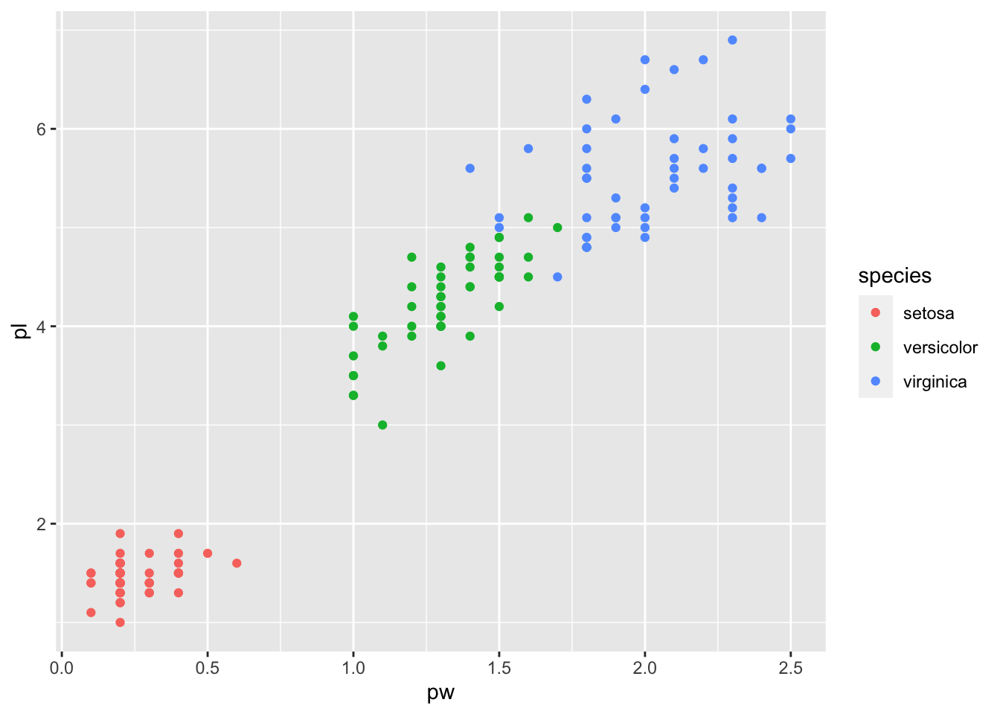
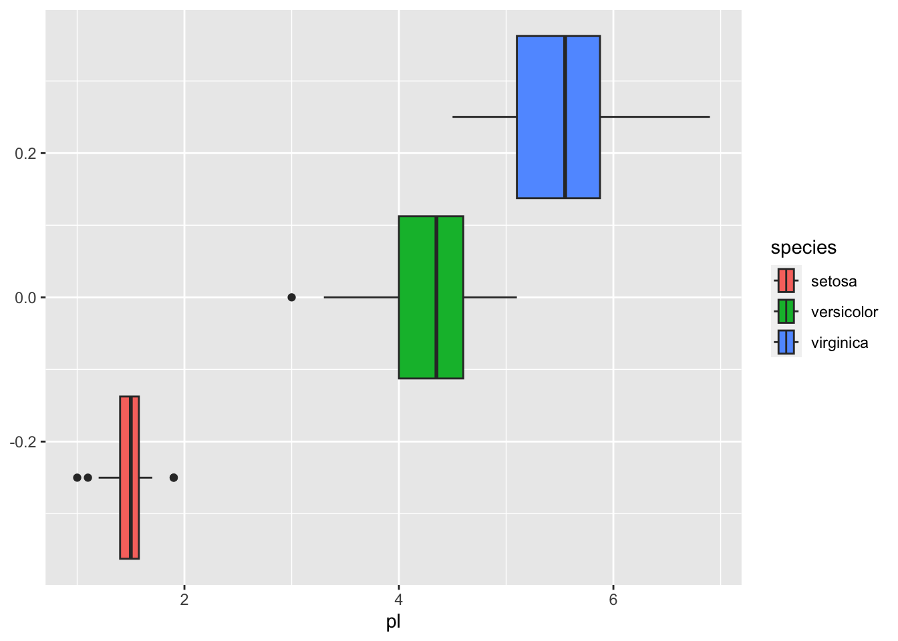
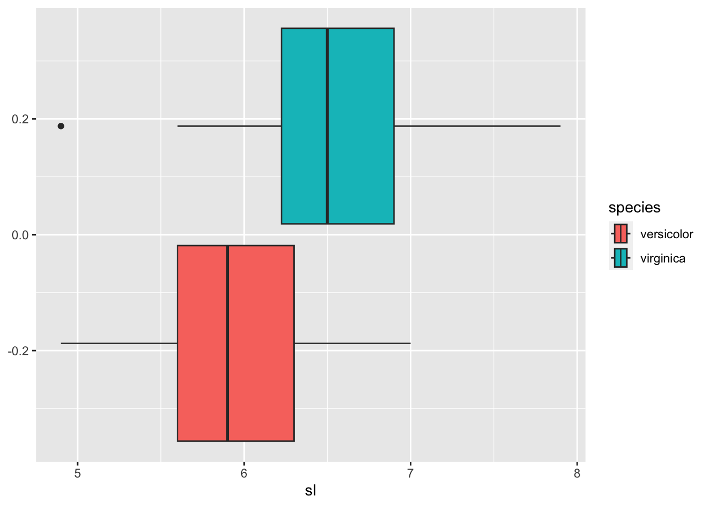

Chapter 8 Topics in Exploratory Data Analysis II
Lecture by Prof. Keisuke Ishibashi and R Notebook Compiled by HS
Project
- Classification
- Example: simple guessing by sepal length
- Example: classification by sepal length using
glm - Evaluation of classifications
- Example: classification with various combinations
- Evaluation
- Summary of Classification
- References
8.1 Classification IRIS dataset
8.1.1 Setup
library(tidyverse)## ── Attaching packages ─────────────────────────────────────── tidyverse 1.3.2 ──
## ✔ ggplot2 3.3.6 ✔ purrr 0.3.4
## ✔ tibble 3.1.8 ✔ dplyr 1.0.10
## ✔ tidyr 1.2.1 ✔ stringr 1.4.1
## ✔ readr 2.1.2 ✔ forcats 0.5.2
## ── Conflicts ────────────────────────────────────────── tidyverse_conflicts() ──
## ✖ dplyr::filter() masks stats::filter()
## ✖ dplyr::lag() masks stats::lag()library(modelr) # a part of tidyverse package but not a core and need to load
library(modelsummary) # handy comparison introduced by Prof. Kaizoji
library(datasets) # attached as default8.1.2 Data: iris
We want to consider a problem to classify iris by species using the data provided.
data(iris) # renew the data
head(iris)## Sepal.Length Sepal.Width Petal.Length Petal.Width Species
## 1 5.1 3.5 1.4 0.2 setosa
## 2 4.9 3.0 1.4 0.2 setosa
## 3 4.7 3.2 1.3 0.2 setosa
## 4 4.6 3.1 1.5 0.2 setosa
## 5 5.0 3.6 1.4 0.2 setosa
## 6 5.4 3.9 1.7 0.4 setosaSince it is easier to handle data and we add many columns later, we shorten the column names.
iris_tbl <- as_tibble(iris) #%>%
colnames(iris_tbl) <- c("sl", "sw", "pl", "pw", "species")
#rename(sl = Sepal.Length, sw = Sepal.Width, pl = Petal.Length, pw = Petal.Width, species = Species)
iris_tbl## # A tibble: 150 × 5
## sl sw pl pw species
## <dbl> <dbl> <dbl> <dbl> <fct>
## 1 5.1 3.5 1.4 0.2 setosa
## 2 4.9 3 1.4 0.2 setosa
## 3 4.7 3.2 1.3 0.2 setosa
## 4 4.6 3.1 1.5 0.2 setosa
## 5 5 3.6 1.4 0.2 setosa
## 6 5.4 3.9 1.7 0.4 setosa
## 7 4.6 3.4 1.4 0.3 setosa
## 8 5 3.4 1.5 0.2 setosa
## 9 4.4 2.9 1.4 0.2 setosa
## 10 4.9 3.1 1.5 0.1 setosa
## # … with 140 more rowsBefore we start, let us look at the basic imformation of the data. There are three kinds of species.
iris_tbl %>% summary()## sl sw pl pw
## Min. :4.300 Min. :2.000 Min. :1.000 Min. :0.100
## 1st Qu.:5.100 1st Qu.:2.800 1st Qu.:1.600 1st Qu.:0.300
## Median :5.800 Median :3.000 Median :4.350 Median :1.300
## Mean :5.843 Mean :3.057 Mean :3.758 Mean :1.199
## 3rd Qu.:6.400 3rd Qu.:3.300 3rd Qu.:5.100 3rd Qu.:1.800
## Max. :7.900 Max. :4.400 Max. :6.900 Max. :2.500
## species
## setosa :50
## versicolor:50
## virginica :50
##
##
## 8.1.2.1 Visualization
The following already tell something about species.
iris_tbl %>% ggplot(aes(pw,pl, color = species)) + geom_point()
iris_tbl %>% group_by(species) %>%
summarize(sl_mean = mean(sl), sw_mean = mean(sw), pl_mean = mean(pl), pw_mean = mean(pw))## # A tibble: 3 × 5
## species sl_mean sw_mean pl_mean pw_mean
## <fct> <dbl> <dbl> <dbl> <dbl>
## 1 setosa 5.01 3.43 1.46 0.246
## 2 versicolor 5.94 2.77 4.26 1.33
## 3 virginica 6.59 2.97 5.55 2.03The mean of setosa’s petal length is very small compared with others. So it may be possible to classify setosa by petal lenght.
The following are a boxplot and a frequency polygon of the data by petal length.
iris_tbl %>% ggplot(aes(pl, fill = species)) + geom_boxplot()
iris_tbl %>% ggplot(aes(pl, color = species)) + geom_freqpoly()## `stat_bin()` using `bins = 30`. Pick better value with `binwidth`.
iris_tbl %>% group_by(species) %>%
summarize(min_of_petal_lenght = min(pl), max_of_petal_lenght = max(pl))## # A tibble: 3 × 3
## species min_of_petal_lenght max_of_petal_lenght
## <fct> <dbl> <dbl>
## 1 setosa 1 1.9
## 2 versicolor 3 5.1
## 3 virginica 4.5 6.9Hence if we set the threshhold to be around 2.5, we can separate setosa.
iris_tbl2 <- iris_tbl %>% filter(pl >= 2.5)
summary(iris_tbl2)## sl sw pl pw
## Min. :4.900 Min. :2.000 Min. :3.000 Min. :1.000
## 1st Qu.:5.800 1st Qu.:2.700 1st Qu.:4.375 1st Qu.:1.300
## Median :6.300 Median :2.900 Median :4.900 Median :1.600
## Mean :6.262 Mean :2.872 Mean :4.906 Mean :1.676
## 3rd Qu.:6.700 3rd Qu.:3.025 3rd Qu.:5.525 3rd Qu.:2.000
## Max. :7.900 Max. :3.800 Max. :6.900 Max. :2.500
## species
## setosa : 0
## versicolor:50
## virginica :50
##
##
## Since it looks difficult to classify versicolor and virginica only by petal length, let us look at other variables.
iris_tbl %>% ggplot(aes(sl,pl, color = species)) + geom_point()
8.1.2.2 Sepal Length
You can find different features of charts, boxplots and frequency polygons of sepal length.
iris_tbl2 %>% ggplot(aes(sl, fill = species)) + geom_boxplot()
iris_tbl2 %>% ggplot(aes(sl, color = species)) + geom_freqpoly()## `stat_bin()` using `bins = 30`. Pick better value with `binwidth`.
8.1.3 Binary classification
Let us set a numerical marker 1 to virginica.
iris_tbl2ext <- iris_tbl2 %>%
mutate(virginica = as.numeric(species == 'virginica'))
iris_tbl2ext %>% arrange(-virginica)## # A tibble: 100 × 6
## sl sw pl pw species virginica
## <dbl> <dbl> <dbl> <dbl> <fct> <dbl>
## 1 6.3 3.3 6 2.5 virginica 1
## 2 5.8 2.7 5.1 1.9 virginica 1
## 3 7.1 3 5.9 2.1 virginica 1
## 4 6.3 2.9 5.6 1.8 virginica 1
## 5 6.5 3 5.8 2.2 virginica 1
## 6 7.6 3 6.6 2.1 virginica 1
## 7 4.9 2.5 4.5 1.7 virginica 1
## 8 7.3 2.9 6.3 1.8 virginica 1
## 9 6.7 2.5 5.8 1.8 virginica 1
## 10 7.2 3.6 6.1 2.5 virginica 1
## # … with 90 more rows8.1.3.1 Manual Classificaiton Using Boxplot
iris_tbl2ext %>% group_by(species) %>%
summarize(min = quantile(sl)[1], `25%` = quantile(sl)[2], `55%` = quantile(sl)[3], `75%` = quantile(sl)[4], max = quantile(sl)[5])## # A tibble: 2 × 6
## species min `25%` `55%` `75%` max
## <fct> <dbl> <dbl> <dbl> <dbl> <dbl>
## 1 versicolor 4.9 5.6 5.9 6.3 7
## 2 virginica 4.9 6.22 6.5 6.9 7.9By the boxplot, the value between 6.225 and 6.3 can be a candidate. So let us take 6.263.
iris_tbl2ext <- iris_tbl2ext %>% mutate(v0 = as.integer(sl > 6.263))
iris_tbl2ext## # A tibble: 100 × 7
## sl sw pl pw species virginica v0
## <dbl> <dbl> <dbl> <dbl> <fct> <dbl> <int>
## 1 7 3.2 4.7 1.4 versicolor 0 1
## 2 6.4 3.2 4.5 1.5 versicolor 0 1
## 3 6.9 3.1 4.9 1.5 versicolor 0 1
## 4 5.5 2.3 4 1.3 versicolor 0 0
## 5 6.5 2.8 4.6 1.5 versicolor 0 1
## 6 5.7 2.8 4.5 1.3 versicolor 0 0
## 7 6.3 3.3 4.7 1.6 versicolor 0 1
## 8 4.9 2.4 3.3 1 versicolor 0 0
## 9 6.6 2.9 4.6 1.3 versicolor 0 1
## 10 5.2 2.7 3.9 1.4 versicolor 0 0
## # … with 90 more rows8.1.3.2 Logistic Model Using glm() General Linear Model: Sepal Length
iris_mod1 <-iris_tbl2ext %>% glm(virginica~sl, family = binomial, .)
iris_mod1 %>% summary()##
## Call:
## glm(formula = virginica ~ sl, family = binomial, data = .)
##
## Deviance Residuals:
## Min 1Q Median 3Q Max
## -1.85340 -0.90001 -0.04717 0.96861 2.35458
##
## Coefficients:
## Estimate Std. Error z value Pr(>|z|)
## (Intercept) -12.5708 2.9068 -4.325 1.53e-05 ***
## sl 2.0129 0.4654 4.325 1.53e-05 ***
## ---
## Signif. codes: 0 '***' 0.001 '**' 0.01 '*' 0.05 '.' 0.1 ' ' 1
##
## (Dispersion parameter for binomial family taken to be 1)
##
## Null deviance: 138.63 on 99 degrees of freedom
## Residual deviance: 110.55 on 98 degrees of freedom
## AIC: 114.55
##
## Number of Fisher Scoring iterations: 4iris_tbl2ext_1 <- iris_tbl2ext %>%
add_predictions(iris_mod1, var = "pred_1", type = "response") %>%
add_residuals(iris_mod1, var = "resid_1") %>%
mutate(v1 = as.integer(pred_1 >= 0.5))
iris_tbl2ext_1 %>% arrange(desc(sl))## # A tibble: 100 × 10
## sl sw pl pw species virginica v0 pred_1 resid_1 v1
## <dbl> <dbl> <dbl> <dbl> <fct> <dbl> <int> <dbl> <dbl> <int>
## 1 7.9 3.8 6.4 2 virginica 1 1 0.965 -2.33 1
## 2 7.7 3.8 6.7 2.2 virginica 1 1 0.949 -1.93 1
## 3 7.7 2.6 6.9 2.3 virginica 1 1 0.949 -1.93 1
## 4 7.7 2.8 6.7 2 virginica 1 1 0.949 -1.93 1
## 5 7.7 3 6.1 2.3 virginica 1 1 0.949 -1.93 1
## 6 7.6 3 6.6 2.1 virginica 1 1 0.939 -1.73 1
## 7 7.4 2.8 6.1 1.9 virginica 1 1 0.911 -1.32 1
## 8 7.3 2.9 6.3 1.8 virginica 1 1 0.893 -1.12 1
## 9 7.2 3.6 6.1 2.5 virginica 1 1 0.872 -0.922 1
## 10 7.2 3.2 6 1.8 virginica 1 1 0.872 -0.922 1
## # … with 90 more rowsiris_tbl2ext_1 %>% ggplot() +
geom_point(aes(x = sl, y = virginica, color = species)) +
geom_line(aes(x = sl, y = pred_1))
iris_tbl2ext_1 %>% filter(v0 == 1, virginica == 1) %>% nrow()/50## [1] 0.74iris_tbl2ext_1 %>% filter(v1 == 1, virginica == 1) %>% nrow()/50## [1] 0.74For both models, 74% of virginica was classified as virginica.
8.1.4 Various Logistic Models
8.1.4.1 One Variable
iris_mod2 <-iris_tbl2ext %>% glm(virginica~sw, family = binomial, .)
iris_mod3 <-iris_tbl2ext %>% glm(virginica~pl, family = binomial, .)
iris_mod4 <-iris_tbl2ext %>% glm(virginica~pw, family = binomial, .)iris_tbl2ext_one <- iris_tbl2ext_1 %>%
add_predictions(iris_mod2, var = "pred_2", type = "response") %>%
mutate(v2 = as.integer(pred_2 >= 0.5)) %>%
add_predictions(iris_mod3, var = "pred_3", type = "response") %>%
mutate(v3 = as.integer(pred_3 >= 0.5)) %>%
add_predictions(iris_mod4, var = "pred_4", type = "response") %>%
mutate(v4 = as.integer(pred_4 >= 0.5))
iris_tbl2ext_one %>% arrange(desc(sl))## # A tibble: 100 × 16
## sl sw pl pw species virginica v0 pred_1 resid_1 v1 pred_2
## <dbl> <dbl> <dbl> <dbl> <fct> <dbl> <int> <dbl> <dbl> <int> <dbl>
## 1 7.9 3.8 6.4 2 virginica 1 1 0.965 -2.33 1 0.874
## 2 7.7 3.8 6.7 2.2 virginica 1 1 0.949 -1.93 1 0.874
## 3 7.7 2.6 6.9 2.3 virginica 1 1 0.949 -1.93 1 0.362
## 4 7.7 2.8 6.7 2 virginica 1 1 0.949 -1.93 1 0.462
## 5 7.7 3 6.1 2.3 virginica 1 1 0.949 -1.93 1 0.566
## 6 7.6 3 6.6 2.1 virginica 1 1 0.939 -1.73 1 0.566
## 7 7.4 2.8 6.1 1.9 virginica 1 1 0.911 -1.32 1 0.462
## 8 7.3 2.9 6.3 1.8 virginica 1 1 0.893 -1.12 1 0.515
## 9 7.2 3.6 6.1 2.5 virginica 1 1 0.872 -0.922 1 0.821
## 10 7.2 3.2 6 1.8 virginica 1 1 0.872 -0.922 1 0.665
## # … with 90 more rows, and 5 more variables: v2 <int>, pred_3 <dbl>, v3 <int>,
## # pred_4 <dbl>, v4 <int>iris_tbl2ext_one %>% filter(v2 == 1, virginica == 1) %>% nrow()/50## [1] 0.62iris_tbl2ext_one %>% filter(v3 == 1, virginica == 1) %>% nrow()/50## [1] 0.94iris_tbl2ext_one %>% filter(v4 == 1, virginica == 1) %>% nrow()/50## [1] 0.928.1.4.2 Model Summary
msummary(list(mod1 = iris_mod1, mod2 = iris_mod2, mod3 = iris_mod3, mod4 = iris_mod3), statistic = 'p.value')| mod1 | mod2 | mod3 | mod4 | |
|---|---|---|---|---|
| (Intercept) | −12.571 | −6.001 | −43.781 | −43.781 |
| (0.000) | (0.004) | (0.000) | (0.000) | |
| sl | 2.013 | |||
| (0.000) | ||||
| sw | 2.089 | |||
| (0.003) | ||||
| pl | 9.002 | 9.002 | ||
| (0.000) | (0.000) | |||
| Num.Obs. | 100 | 100 | 100 | 100 |
| AIC | 114.5 | 132.6 | 37.4 | 37.4 |
| BIC | 119.8 | 137.8 | 42.6 | 42.6 |
| Log.Lik. | −55.273 | −64.290 | −16.716 | −16.716 |
| RMSE | 0.43 | 0.48 | 0.22 | 0.22 |
8.1.4.3 Two Variables
iris_mod12 <-iris_tbl2ext %>% glm(virginica~sl + sw, family = binomial, .)
iris_mod13 <-iris_tbl2ext %>% glm(virginica~sl + pl, family = binomial, .)
iris_mod14 <-iris_tbl2ext %>% glm(virginica~sl + pw, family = binomial, .)
iris_mod23 <-iris_tbl2ext %>% glm(virginica~sw + pl, family = binomial, .)
iris_mod24 <-iris_tbl2ext %>% glm(virginica~sw + pw, family = binomial, .)
iris_mod34 <-iris_tbl2ext %>% glm(virginica~pl + pw, family = binomial, .)iris_tbl2ext_two <- iris_tbl2ext_one %>%
add_predictions(iris_mod12, var = "pred_12", type = "response") %>%
mutate(v12 = as.integer(pred_12 >= 0.5)) %>%
add_predictions(iris_mod13, var = "pred_13", type = "response") %>%
mutate(v13 = as.integer(pred_13 >= 0.5)) %>%
add_predictions(iris_mod14, var = "pred_14", type = "response") %>%
mutate(v14 = as.integer(pred_14 >= 0.5)) %>%
add_predictions(iris_mod23, var = "pred_23", type = "response") %>%
mutate(v23 = as.integer(pred_23 >= 0.5)) %>%
add_predictions(iris_mod24, var = "pred_24", type = "response") %>%
mutate(v24 = as.integer(pred_24 >= 0.5)) %>%
add_predictions(iris_mod34, var = "pred_34", type = "response") %>%
mutate(v34 = as.integer(pred_34 >= 0.5))
iris_tbl2ext_two %>% arrange(desc(sl))## # A tibble: 100 × 28
## sl sw pl pw species virginica v0 pred_1 resid_1 v1 pred_2
## <dbl> <dbl> <dbl> <dbl> <fct> <dbl> <int> <dbl> <dbl> <int> <dbl>
## 1 7.9 3.8 6.4 2 virginica 1 1 0.965 -2.33 1 0.874
## 2 7.7 3.8 6.7 2.2 virginica 1 1 0.949 -1.93 1 0.874
## 3 7.7 2.6 6.9 2.3 virginica 1 1 0.949 -1.93 1 0.362
## 4 7.7 2.8 6.7 2 virginica 1 1 0.949 -1.93 1 0.462
## 5 7.7 3 6.1 2.3 virginica 1 1 0.949 -1.93 1 0.566
## 6 7.6 3 6.6 2.1 virginica 1 1 0.939 -1.73 1 0.566
## 7 7.4 2.8 6.1 1.9 virginica 1 1 0.911 -1.32 1 0.462
## 8 7.3 2.9 6.3 1.8 virginica 1 1 0.893 -1.12 1 0.515
## 9 7.2 3.6 6.1 2.5 virginica 1 1 0.872 -0.922 1 0.821
## 10 7.2 3.2 6 1.8 virginica 1 1 0.872 -0.922 1 0.665
## # … with 90 more rows, and 17 more variables: v2 <int>, pred_3 <dbl>, v3 <int>,
## # pred_4 <dbl>, v4 <int>, pred_12 <dbl>, v12 <int>, pred_13 <dbl>, v13 <int>,
## # pred_14 <dbl>, v14 <int>, pred_23 <dbl>, v23 <int>, pred_24 <dbl>,
## # v24 <int>, pred_34 <dbl>, v34 <int>iris_tbl2ext_two %>% filter(v12 == 1, virginica == 1) %>% nrow()/50## [1] 0.74iris_tbl2ext_two %>% filter(v13 == 1, virginica == 1) %>% nrow()/50## [1] 0.96iris_tbl2ext_two %>% filter(v14 == 1, virginica == 1) %>% nrow()/50## [1] 0.92iris_tbl2ext_two %>% filter(v23 == 1, virginica == 1) %>% nrow()/50## [1] 0.92iris_tbl2ext_two %>% filter(v24 == 1, virginica == 1) %>% nrow()/50## [1] 0.94iris_tbl2ext_two %>% filter(v34 == 1, virginica == 1) %>% nrow()/50## [1] 0.948.1.4.4 Model Summary
msummary(list(mod12 = iris_mod12, mod13 = iris_mod13, mod14 = iris_mod14, mod23 = iris_mod23, mod24 = iris_mod24, mod34 = iris_mod34), statistic = 'p.value')| mod12 | mod13 | mod14 | mod23 | mod24 | mod34 | |
|---|---|---|---|---|---|---|
| (Intercept) | −13.046 | −39.839 | −22.874 | −37.058 | −14.379 | −45.272 |
| (0.000) | (0.002) | (0.001) | (0.001) | (0.005) | (0.001) | |
| sl | 1.902 | −4.017 | 0.306 | |||
| (0.000) | (0.013) | (0.715) | ||||
| sw | 0.405 | −2.509 | −3.907 | |||
| (0.639) | (0.184) | (0.025) | ||||
| pl | 13.313 | 9.098 | 5.755 | |||
| (0.001) | (0.000) | (0.013) | ||||
| pw | 12.845 | 15.700 | 10.447 | |||
| (0.000) | (0.000) | (0.005) | ||||
| Num.Obs. | 100 | 100 | 100 | 100 | 100 | 100 |
| AIC | 116.3 | 29.9 | 39.3 | 37.5 | 33.4 | 26.6 |
| BIC | 124.1 | 37.7 | 47.1 | 45.3 | 41.2 | 34.4 |
| Log.Lik. | −55.163 | −11.925 | −16.643 | −15.756 | −13.700 | −10.282 |
| RMSE | 0.43 | 0.18 | 0.22 | 0.22 | 0.21 | 0.19 |
8.1.4.5 Three and All Variables
iris_mod123 <-iris_tbl2ext %>% glm(virginica~sl + sw + pl, family = binomial, .)
iris_mod124 <-iris_tbl2ext %>% glm(virginica~sl + sw + pw, family = binomial, .)
iris_mod134 <-iris_tbl2ext %>% glm(virginica~sl + pl + pw, family = binomial, .)
iris_mod234 <-iris_tbl2ext %>% glm(virginica~sw + pl + pw, family = binomial, .)## Warning: glm.fit: 数値的に 0 か 1 である確率が生じましたiris_mod1234 <-iris_tbl2ext %>% glm(virginica~sl + sw + pl + pw, family = binomial, .)iris_tbl2ext_all <- iris_tbl2ext_two %>%
add_predictions(iris_mod123, var = "pred_123", type = "response") %>%
mutate(v123 = as.integer(pred_123 >= 0.5)) %>%
add_predictions(iris_mod124, var = "pred_124", type = "response") %>%
mutate(v124 = as.integer(pred_124 >= 0.5)) %>%
add_predictions(iris_mod134, var = "pred_134", type = "response") %>%
mutate(v134 = as.integer(pred_134 >= 0.5)) %>%
add_predictions(iris_mod234, var = "pred_234", type = "response") %>%
mutate(v234 = as.integer(pred_234 >= 0.5)) %>%
add_predictions(iris_mod1234, var = "pred_1234", type = "response") %>%
mutate(v1234 = as.integer(pred_1234 >= 0.5))
iris_tbl2ext_all %>% arrange(desc(sl))## # A tibble: 100 × 38
## sl sw pl pw species virginica v0 pred_1 resid_1 v1 pred_2
## <dbl> <dbl> <dbl> <dbl> <fct> <dbl> <int> <dbl> <dbl> <int> <dbl>
## 1 7.9 3.8 6.4 2 virginica 1 1 0.965 -2.33 1 0.874
## 2 7.7 3.8 6.7 2.2 virginica 1 1 0.949 -1.93 1 0.874
## 3 7.7 2.6 6.9 2.3 virginica 1 1 0.949 -1.93 1 0.362
## 4 7.7 2.8 6.7 2 virginica 1 1 0.949 -1.93 1 0.462
## 5 7.7 3 6.1 2.3 virginica 1 1 0.949 -1.93 1 0.566
## 6 7.6 3 6.6 2.1 virginica 1 1 0.939 -1.73 1 0.566
## 7 7.4 2.8 6.1 1.9 virginica 1 1 0.911 -1.32 1 0.462
## 8 7.3 2.9 6.3 1.8 virginica 1 1 0.893 -1.12 1 0.515
## 9 7.2 3.6 6.1 2.5 virginica 1 1 0.872 -0.922 1 0.821
## 10 7.2 3.2 6 1.8 virginica 1 1 0.872 -0.922 1 0.665
## # … with 90 more rows, and 27 more variables: v2 <int>, pred_3 <dbl>, v3 <int>,
## # pred_4 <dbl>, v4 <int>, pred_12 <dbl>, v12 <int>, pred_13 <dbl>, v13 <int>,
## # pred_14 <dbl>, v14 <int>, pred_23 <dbl>, v23 <int>, pred_24 <dbl>,
## # v24 <int>, pred_34 <dbl>, v34 <int>, pred_123 <dbl>, v123 <int>,
## # pred_124 <dbl>, v124 <int>, pred_134 <dbl>, v134 <int>, pred_234 <dbl>,
## # v234 <int>, pred_1234 <dbl>, v1234 <int>iris_tbl2ext_all %>% filter(v123 == 1, virginica == 1) %>% nrow()/50## [1] 0.96iris_tbl2ext_all %>% filter(v124 == 1, virginica == 1) %>% nrow()/50## [1] 0.96iris_tbl2ext_all %>% filter(v134 == 1, virginica == 1) %>% nrow()/50## [1] 0.98iris_tbl2ext_all %>% filter(v234 == 1, virginica == 1) %>% nrow()/50## [1] 0.98iris_tbl2ext_all %>% filter(v1234 == 1, virginica == 1) %>% nrow()/50## [1] 0.988.1.4.6 Confusion Matrices
iris_tbl2ext_all %>% xtabs(~ v134 + virginica, .)## virginica
## v134 0 1
## 0 48 1
## 1 2 49iris_tbl2ext_all %>% xtabs(~ v234 + virginica, .)## virginica
## v234 0 1
## 0 48 1
## 1 2 49iris_tbl2ext_all %>% xtabs(~ v1234 + virginica, .)## virginica
## v1234 0 1
## 0 49 1
## 1 1 498.1.4.7 Model Summary
msummary(list(mod123 = iris_mod123, mod124 = iris_mod124, mod134 = iris_mod134, mod234 = iris_mod234, mod1234 = iris_mod1234), statistic = 'p.value')| mod123 | mod124 | mod134 | mod234 | mod1234 | |
|---|---|---|---|---|---|
| (Intercept) | −38.215 | −20.287 | −40.831 | −50.527 | −42.638 |
| (0.007) | (0.012) | (0.028) | (0.035) | (0.097) | |
| sl | −3.852 | 1.295 | −3.839 | −2.465 | |
| (0.024) | (0.234) | (0.071) | (0.303) | ||
| sw | −0.639 | −4.823 | −8.376 | −6.681 | |
| (0.780) | (0.021) | (0.079) | (0.136) | ||
| pl | 13.147 | 9.754 | 7.875 | 9.429 | |
| (0.001) | (0.029) | (0.040) | (0.047) | ||
| pw | 15.923 | 10.102 | 21.430 | 18.286 | |
| (0.000) | (0.028) | (0.045) | (0.061) | ||
| Num.Obs. | 100 | 100 | 100 | 100 | 100 |
| AIC | 31.8 | 33.9 | 23.5 | 21.3 | 21.9 |
| BIC | 42.2 | 44.3 | 33.9 | 31.7 | 34.9 |
| Log.Lik. | −11.886 | −12.951 | −7.746 | −6.633 | −5.949 |
| RMSE | 0.18 | 0.20 | 0.16 | 0.15 | 0.14 |
iris_tbl2ext_all %>% select(virginica, v0, v1, v2, v3, v4, v12, v13, v14, v23, v24, v34, v123, v124, v134, v234, v1234)## # A tibble: 100 × 17
## virginica v0 v1 v2 v3 v4 v12 v13 v14 v23 v24 v34
## <dbl> <int> <int> <int> <int> <int> <int> <int> <int> <int> <int> <int>
## 1 0 1 1 1 0 0 1 0 0 0 0 0
## 2 0 1 1 1 0 0 1 0 0 0 0 0
## 3 0 1 1 1 1 0 1 0 0 0 0 0
## 4 0 0 0 0 0 0 0 0 0 0 0 0
## 5 0 1 1 0 0 0 1 0 0 0 0 0
## 6 0 0 0 0 0 0 0 0 0 0 0 0
## 7 0 1 1 1 0 0 1 0 0 0 0 0
## 8 0 0 0 0 0 0 0 0 0 0 0 0
## 9 0 1 1 1 0 0 1 0 0 0 0 0
## 10 0 0 0 0 0 0 0 0 0 0 0 0
## # … with 90 more rows, and 5 more variables: v123 <int>, v124 <int>,
## # v134 <int>, v234 <int>, v1234 <int>8.2 Conclusions
8.2.1 Hypothesis generation vs. hypothesis confirmation
Each observation can either be used for exploration or confirmation, not both.
You can use an observation as many times as you like for exploration, but you can only use it once for confirmation. As soon as you use an observation twice, you’ve switched from confirmation to exploration.
If you are serious about doing an confirmatory analysis, one approach is to split your data into three pieces before you begin the analysis:
60% of your data goes into a training (or exploration) set. You’re allowed to do anything you like with this data: visualise it and fit tons of models to it.
20% goes into a query set. You can use this data to compare models or visualisations by hand, but you’re not allowed to use it as part of an automated process.
20% is held back for a test set. You can only use this data ONCE, to test your final model.
8.2.2 References
- Iris Classification: https://github.com/trevorwitter/Iris-classification-R